B03901018 楊程皓
B03901034 吳泓霖
B03901052 王傑生
The short-time Fourier transform is a Fourier-related transform used to determine the sinusoidal frequency and phase content of local sections of a signal as it changes over time.
In practice, the procedure for computing STFTs is to divide a longer time signal into shorter segments of equal length and then compute the Fourier transform separately on each shorter segment. This reveals the Fourier spectrum on each shorter segment. One then usually plots the changing spectra as a function of time.
In signal processing, a digital biquad filter is a second-order recursive linear filter, containing two poles and two zeros. "Biquad" is an abbreviation of "biquadratic", which refers to the fact that in the Z domain.
Its transfer function is the ratio of two quadratic functions:
In signal analysis, beat detection is using computer software or computer hardware to detect the beat of a musical score. There are many methods available and beat detection is always a tradeoff between accuracy and speed. Beat detectors are common in music visualization software such as some media player plugins.
The algorithms used may utilize simple statistical models based on sound energy or may involve sophisticated comb filter networks or other means. They may be fast enough to run in real time or may be so slow as to only be able to analyze short sections of songs.